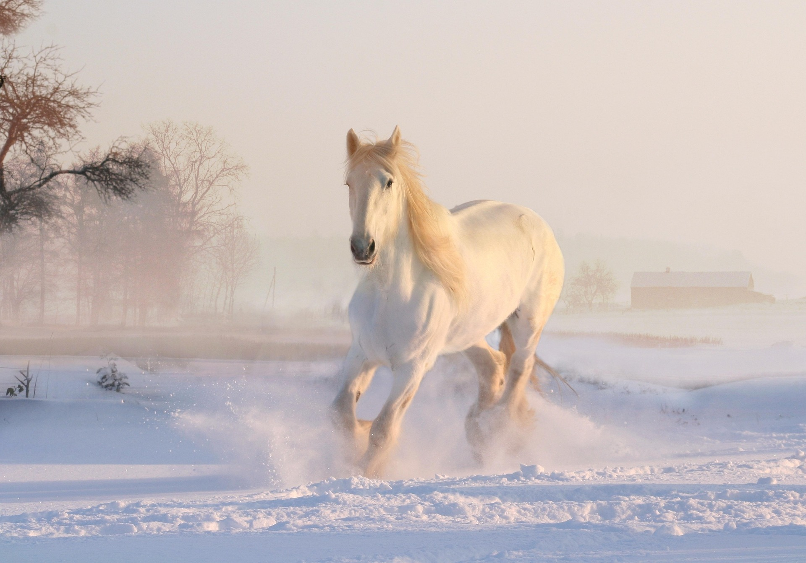
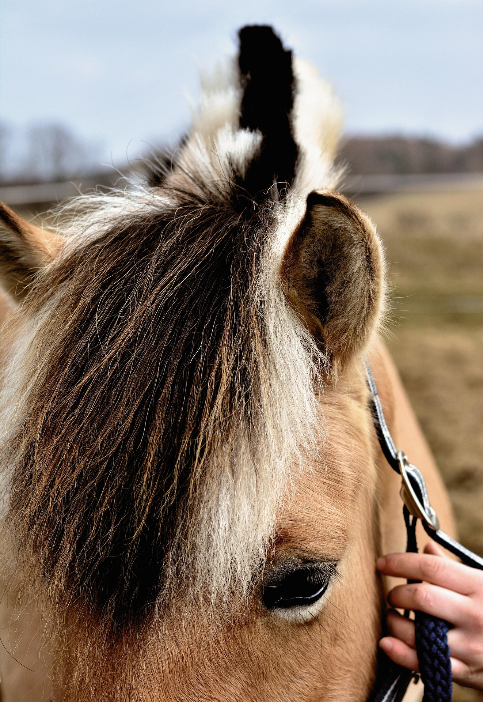

By Antonio Medina Cazorla para Diseño de Interfaces WEB

Caballos en libertad, imagen tomada en el Campillo al pie de la
Sierra de las Estancias, Almería. Valerosa y Hera. La Sierra de
las Estancias es un macizo montañoso español que cruza
transversalmente el norte de la provincia de Almería.

Una imagen luminosaValerosa, Quiron y RuchaFavoritoValerosa y Hera